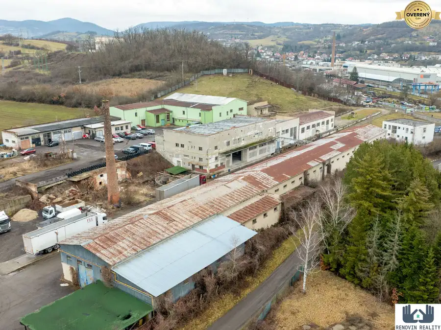
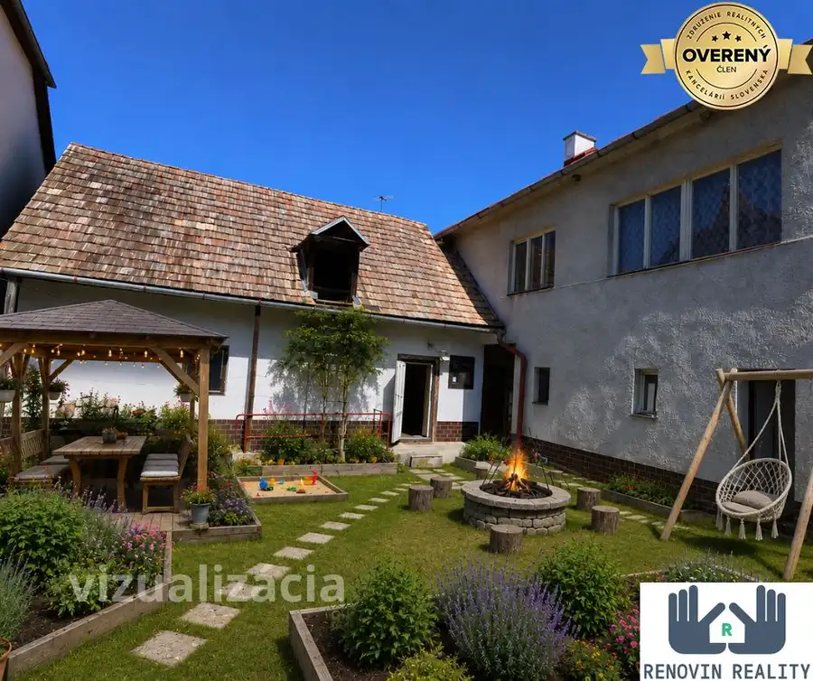

Rodinný dom s veľkým pozemkom 3 000m² v centre obce – Kozí Vrbovok
Kozí Vrbovok
- Dispozícia3+2
- Plocha270 m²
- Stavnutná rekonštrukcia
O nehnuteľnosti
Miesto, ktoré ponúka pokoj, krásu okolitej prírody a ideálne podmienky na rekreáciu aj oddych. Pokojná krajina južného Slovenska vytvára perfektné zázemie pre chalupárčenie aj vlastné útočisko mimo mestského zhonu.
Práve v tichej obci Kozí Vrbovok ponúkame nehnuteľnosť s výnimočne veľkým pozemkom, vhodnú predovšetkým ako rekreačnú nehnuteľnosť, no s potenciálom aj na dlhodobé bývanie.
Atraktívna lokalita plná zaujímavých možností na rekreáciu aj aktívny oddych
Obec Kozí Vrbovok sa nachádza v pokojnom prostredí, obklopenom Štiavnickými vrchmi, ktoré ponúkajú bohaté možnosti rekreácie a aktívneho oddychu počas celého roka.
Neďaleko obce sa nachádza historická Banská Štiavnica, známa jedinečnou architektúrou, kultúrnymi pamiatkami a prírodnými tajchami vhodnými na kúpanie aj oddych. Medzi najobľúbenejšie patria Počúvadlianske jazero a Studenské jazerá, ideálne na letné osvieženie.
Okolie ponúka množstvo turistických a cyklistických trás, ktoré vedú cez Krupinskú planinu aj lesné časti Štiavnických vrchov. Skvelým výletným cieľom je Sitno, najvyšší vrch oblasti, s krásnymi výhľadmi na široké okolie.
Milovníci histórie ocenia návštevu Krupiny s dominantou Vyhliadkovej veže Vartovka či historickej pevnosti Bzovík. Na oddych a relax sú ideálnou voľbou kúpele Dudince, ktoré sú vyhľadávané pre svoje termálne pramene.
Prírodné prostredie v okolí Kozieho Vrbovka ponúka pokoj, súkromie a ideálne podmienky na prechádzky, cyklovýlety, hubárčenie aj rekreáciu počas celého roka. Lokalita je preto vhodná nielen na oddych, ale aj ako rekreačná či investičná nehnuteľnosť.
Veľký pozemok – priestor pre vašu slobodu a nápady.
Pozemok s výmerou 3 000 m² poskytuje výnimočný priestor a súkromie:
• rovinatá časť s domom – ideálna na oddychovú zónu, terasu či záhradu
• za domom sa nachádza záhrada a ovocný sad vo svahu
• pokojné prostredie, zeleň a výhľady do okolitej krajiny
Dom s charakterom a potenciálom chalupy
Pôvodný kamenný rodinný dom s výmerou cca 170 m² je určený na kompletnú rekonštrukciu, čo ponúka ideálnu príležitosť vytvoriť si rekreačnú chalupu alebo víkendový dom podľa vlastných predstáv.
Dispozícia domu:
kuchyňa, 3 izby, kúpeľňa, samostatné WC, komora a presklená veranda s výhľadom do záhrady.
Prístavba – priestor navyše ako bonus
Na pozemku sa nachádza aj murovaná prístavba o výmere cca 100 m² s privedeným vodovodom.
Vhodná ako:
• hosťovský dom
• ateliér alebo dielňa
• letná kuchyňa, wellness či hobby priestor
Pre koho je toto miesto ideálne?
• pre tých, ktorí hľadajú rekreačnú nehnuteľnosť v prírode
• pre ľudí túžiacich po pokoji, priestore a súkromí
• pre chalupárov, ktorí chcú dať starému domu nový príbeh
• pre tých, ktorí hľadajú miesto na víkendy, prázdniny aj dlhšie pobyty
Ak hľadáte miesto, kam sa budete radi vracať, toto môže byť ono.
Radi vás privítame na obhliadke.
Niekedy stačí prísť – a pocit rozhodne za vás. ??
Parametre
| Rozloha pozemku | 3000 m² |
|---|---|
| Zastavaná plocha | 270 m² |
| Úžitková plocha | 270 m² |
| Počet izieb | 3+2 |
| Stav | nutná rekonštrukcia |
| Odvoz odpadu | áno |
| Voda | verejný vodovod |
| Plyn | nie |
| Kanalizácia | žumpa |
| Internet | nie |
| Kúpeľňa | áno |
| Parkovanie | vonkajšie |
| Inžinierske siete | áno |
| Postavené z | iné |
| Zariadenie | nezariadený |
| Zateplený objekt | nie |
| Strecha | pôvodná |
| Káblová televízia | nie |
| Predzáhradka | áno |
| Bezbariérový prístup | nie |
| Okná | drevené |
| Terén | rovina |
| Prístupová cesta | asfaltová cesta |
| Dátum zverejnenia | 20. 10. 2025 |
Kde to je
Mohlo by Vás zaujímať

Nebytové priestory10 Cena dohodouPrenájom skladových / výrobných hál – Krupina, priemyselná zóna Krupina 1442 m² Ponúkame na prenájom skladové/výrobné haly nachádzajúce sa v priemyselnej zóne mesta Krupina (areál bývalej Fatry). Priestory sú ideálne pre firmy,…
Rodinné domy10 137 000 €Predaj rodinný dom s priestrannou letnou kuchyňou, Zvolen Lukové Zvolen 4+2170 m² Predstavte si miesto, kde ráno počujete spev vtákov namiesto ruchu mesta. Kde si po práci vychutnáte pokoj na dvore, no do Zvolena sa dostanete za…